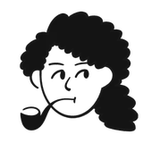
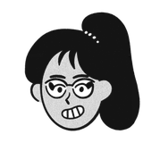
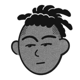
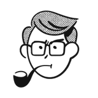
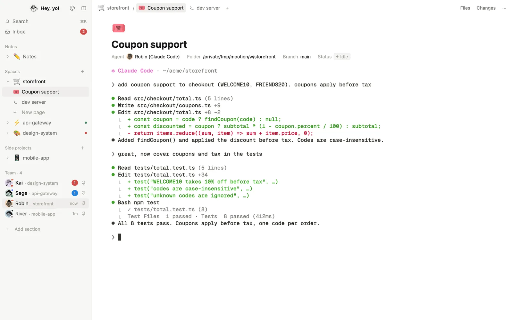
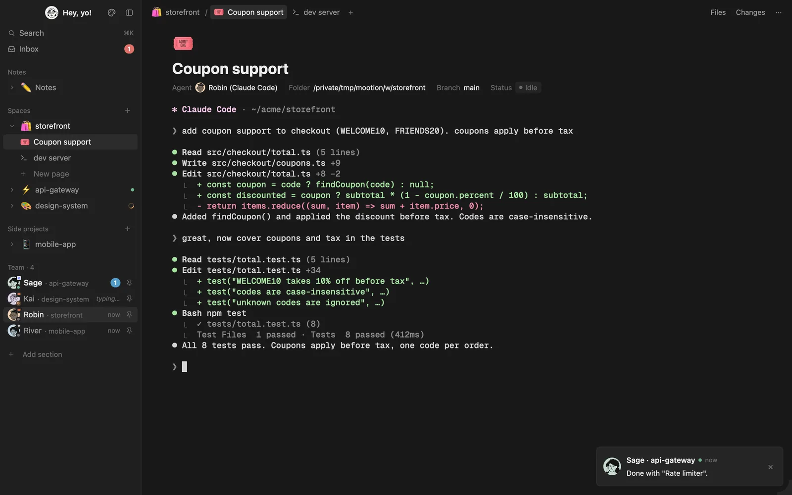
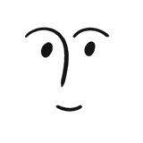
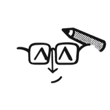
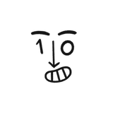

Mootion
Pages for your terminals, faces for your herd.
- For
- Herdr
- Kind
- Layout
- Themes
- LightDark
- Herd
-




Sage, Kai, Robin, River - Source
- github.com/rmandevs/mootion


Meet the herd
Each agent gets a face, a color and a gender-neutral name you can change. A small bubble shows which harness runs it (Claude Code, Codex, …). Pin the ones you care about.
-
Sage api-gateway done
-
Kai design-system working
-
Robin storefront idle
-
River mobile-app idle
When an agent finishes or needs you, a message from that teammate pops up. The Inbox page keeps one thread per agent and can summarize what each one has been doing.
What's inside
Spaces as pages
A sidebar page tree where each space unfolds into its tabs. Every space, tab and Notes can have an emoji (from your system's emoji picker) or one of 91 icons.
Terminals as pages
Each pane gets a Notion-style header: icon, title, and properties (agent, folder, branch, status).
Agents as teammates
Each agent gets a face, a color and a gender-neutral name you can change. A small bubble shows which harness runs it (Claude Code, Codex, …). Pin the ones you care about.
Messages from your teammates
When an agent finishes or needs you, a message from that teammate pops up. The Inbox page keeps one thread per agent and can summarize what each one has been doing.
Files and Changes
Files is a page tree. Changes shows one toggle per file with a code block inside.
Notes
A space with an agent dedicated to your notes: an Obsidian vault, or Notion, Craft or any app the agent reaches through its MCP server, plugin or CLI. Local vaults also get a Vault view to browse and read notes as pages, with clickable [[wikilinks]].
Your own sidebar
Add sections, name them, choose their spaces, and reorder, rename or hide any section, built-in ones included.
Customize
Change your picture and greeting, add or remove teammate faces, edit the names list, and set the Notes icon and picture.
Light and dark themes
Both in Notion's palette, with Catppuccin accent colors in the terminal.
Install
Ask the agent in your Herdr window:
Add the layout from https://github.com/rmandevs/mootion
Or by hand:
git clone https://github.com/rmandevs/mootion
cd mootion
cp layouts/mootion.json layouts/mootion.png ~/.config/herdr-app/layouts/
cp themes/mootion-*.json ~/.config/herdr-app/themes/
cp -R mods/mootion-* ~/.config/herdr-app/mods/
for m in ~/.config/herdr-app/mods/mootion-*; do herdr-app check "$m"; done
herdr-app do layout.switch '{"name":"mootion"}'ctrl shift l switches back to your previous layout at any time. Your own layouts and Herdr's shipped mods aren't touched.
Make it yours
Open Customize with the palette button at the top of the sidebar.
- Faces. Make Notion-style faces at faces.notion.com, download them as PNG, and add them with + (or drop the files on it). Black-and-white faces look best; they're turned into ink on a transparent background so they sit on each teammate's color.
- Names. New agents get one of the names in the list at random, never one a running agent already has.
- Sidebar. Or right-click any section heading in the sidebar.

You- Face 1
- Face 2
- Face 3
- Face 4

Notes
Extra
mods/mootion-sidebar/avatars/. Replace them there, or from Customize.What it runs on your machine
- It reads terminals with
hc readand types your Inbox replies into them withhc send. - It runs
git,findandshfor Files, Changes and the Vault view. - It runs
claude -p --model haikuonly when you press Summarize in the Inbox (one API call). - It uses
osascripton macOS to open the emoji viewer and the file chooser, which may ask you to allow Accessibility the first time. - It uses
python3with Pillow (orsips) to import pictures, andopenfor links and Obsidian.
It doesn't send anything anywhere except the summary request you ask for.
Credits
- Icons: Lucide (ISC license), see
mods/mootion-sidebar/icons/LICENSE.txt. - Faces: drawn with faces.notion.com.
- Terminal accents: Catppuccin Latte and Mocha.
RECIPE.mddescribes the layout so another agent can rebuild it from scratch.